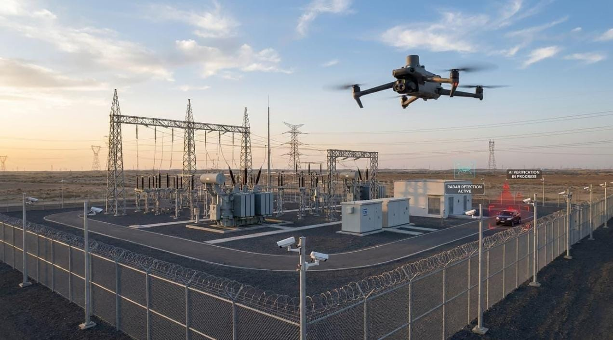

Industrial Drone & Inspection Services
Delivering spatial accuracy, thermographic diagnostic reports, volumetric analytics, and precision aerial spraying for India's core infrastructure, energy, and agri-business assets.
Drone Survey & Mapping
High-resolution spatial mapping and topographical surveying powered by RTK photogrammetry sensors. We generate engineering-grade GIS layers and orthomosaic basemaps.

Centimeter-Level Topographical Precision
Generates CAD-compatible contour maps, DEM models, and high-res orthomosaics for infrastructure engineering.

Key Thermal Audit Outputs:
Solar Plant Thermal Inspection
We deploy radiometric thermal cameras to inspect utility-scale solar farms and rooftop solar plants, isolating defective PV modules before catastrophic string loss.
Wind Turbine Blade Inspection
Autonomous 4K RGB optical inspections of wind turbine rotor blades, detecting surface erosion, micro-cracks, and lightning strikes with zero rope access required.

Non-Destructive Aerial Blade Audit
Saves maintenance crew hazard risks while capturing sub-millimeter surface blade defects.

Earthwork & Site Volumetric Analytics
Cut/fill volume calculations and automated progress tracking for EPC infrastructure contractors.
Construction Progress Monitoring
Keep stakeholders updated with high-resolution aerial timelines, stockpile volume measurements, and infrastructure integrity checks across highways, bridges, and industrial sites.
Agricultural Drone Solutions
Precision agriculture powered by multispectral NDVI sensors. Optimize crop yields, evaluate irrigation stress, and deploy targeted agricultural spraying support.

Multispectral Crop Health Analytics
Identifies pest damage, nutrient deficiency, and irrigation anomalies days before visual signs appear.

Custom Payload Integration & Flight Code
R&D team dedicated to custom drone frame design, sensor integration, and specialized flight missions.
UAV Research & Custom R&D
Custom drone payload development, hardware design, thermal camera retrofitting, and specialized flight software for unique industrial requirements across India.